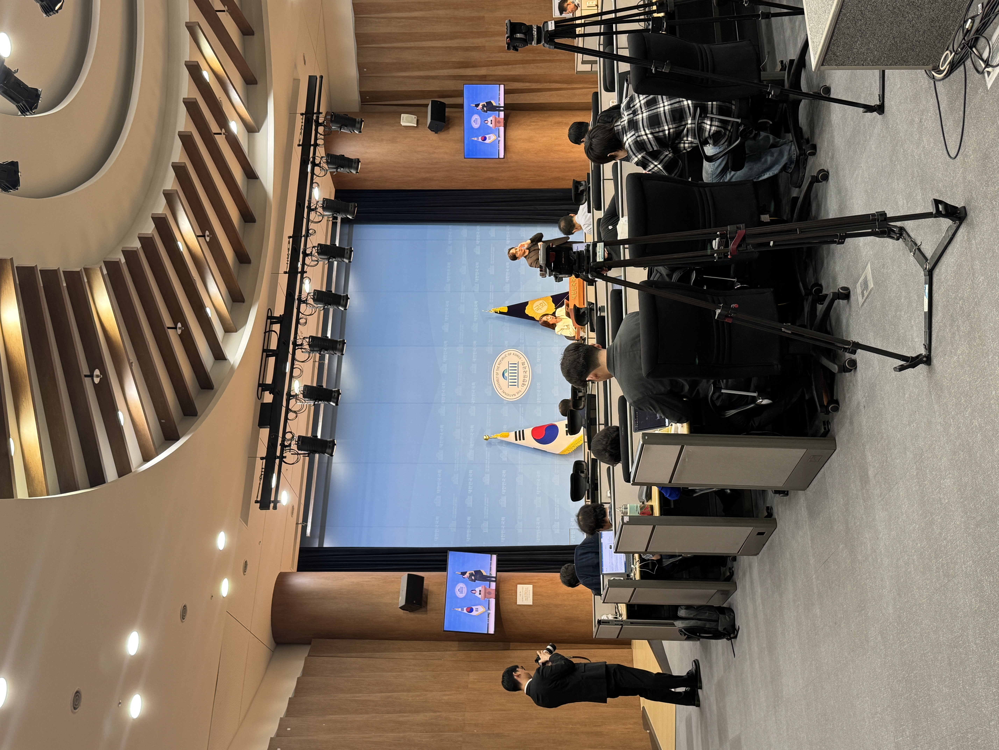
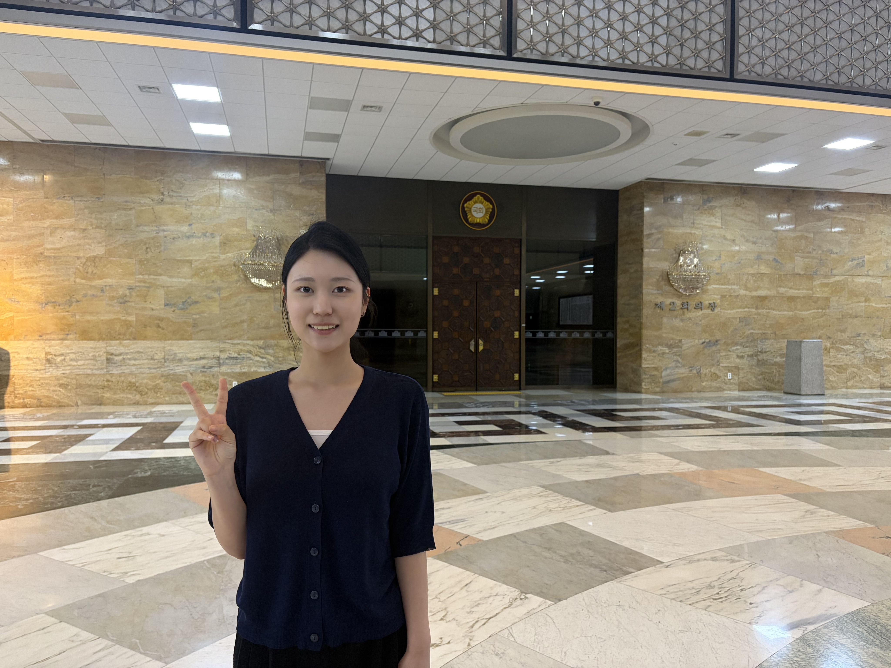

Behind the headlines: My journey through
broadcasting, reporting and storytelling.

PHOTO 01 / PRESS CONFERENCE
Inside the Press Room
During my internship at the Korean National Assembly's
broadcasting station, I had the opportunity to attend
press conferences alongside professional reporters.
I sat toward the back of the room, carefully listening
to each statement and taking notes.
I wanted to learn how reporters turn political events
into clear news stories. Later, I used what I had
observed to practice writing evening news scripts
and recording my own voice.
It was exciting to see journalism happening right
in front of me, rather than just watching it
on television.

PHOTO 02 / INTERNSHIP EXPERIENCE
A Month Behind the News
For one month, I worked at the National Assembly's
broadcasting station from 10 a.m. to 8 p.m.
each weekday.
It was a busy period in Korean politics following
the martial law crisis and the impeachment of
former President Yoon Suk Yeol. Breaking news
often arrived unexpectedly, and I watched the
newsroom make last-minute changes to scripts
and cue cards before broadcasts.
Through this experience, I learned that journalism
requires more than confidence in front of a camera.
It takes preparation, accuracy and the ability
to stay calm under pressure.
Every day made me more excited about my future
as a journalist.